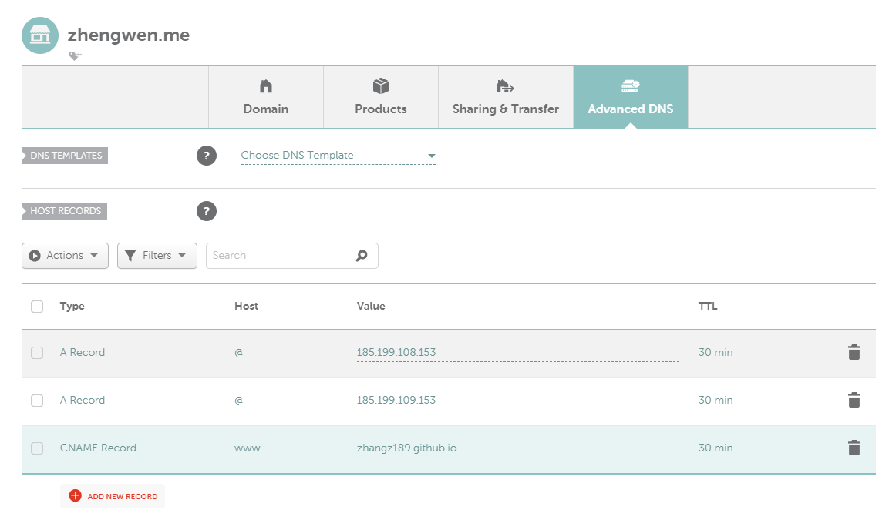

[TOC]
基于静态博客主流框架hexo
Github新建username.github.io仓库并初始化
- username表示Github的账户名，使用该名字创建公有化仓库；
电脑端安装hexo及其依赖项
Windows
- 下载并安装Git；
- 在站点下载Node.js下载并安装；
- 打开Git bash，使用npm安装hexo，输入
$ npm install -g hexo-cli；
Linux
新建本地hexo站点目录并加载next主题
在Git bash中使用hexo建立本地站点目录；
1
2
3$ cd <parental folder>
$ hexo init <folder>
$ npm install # 可能也不需要这一步新建完成后，站点目录如下：
1
2
3
4
5
6
7.
├── _config.yml
├── package.json
├── scaffolds
├── source
| └── _posts
└── themes加载next主题；
在Git bash中使用代码加载next主题到对应themes文件夹：
1
$ git clone https://github.com/iissnan/hexo-theme-next themes/next
开启本地服务查看站点效果
在站点配置文件
_config.yml中修改theme: next，以启用主题；可在主题配置文件
./theme/next/_config.yml中修改scheme: Gemini来改变不同主题风格；使用hexo的本地服务查看主题效果：
1
2$ hexo clean # 清除缓存
$ hexo s --debug # 启动本地服务器并开启调试模式，注意必须要站点目录下操作此时，即可访问
http://localhost:4000，检查站点是否正常运行。
配置站点文件和主题文件
- 修改站点文件
-config.yml
设置站点语言为汉语：
language: zh-Hans；设置网站基本信息：
1
2
3
4
5
6
7
8# Site
title: Paradise of Mind
subtitle:
description: 儒之玄，道之妙，人生儒道，自得其乐
keywords: Technology, Machine Learning, Seismology, Reading
author: zhangz
language: zh-Hans
timezone:
- 修改主题文件
./theme/next/-config.yml
设置网页显示菜单项：
1
2
3
4
5
6
7
8
9menu:
home: / || home
archives: /archives/ || archive
tags: /tags/ || tags
about: /about/ || user
#categories: /categories/ || th
#schedule: /schedule/ || calendar
#sitemap: /sitemap.xml || sitemap
#commonweal: /404/ || heartbeat设置菜单项的图标，支持Font Awesome图标的名字：
1
2
3
4
5
6
7
8
9menu_icons:
enable: true
# Icon Mapping.
home: home
about: user
categories: th
tags: tags/
archives: archive
commonweal: heartbeat进入
./theme/next/languages/zh-Han.yml设置菜单项对应显示文本：1
2
3
4
5
6
7
8
9
10menu:
home: 首页
archives: 归档
categories: 分类
tags: 标签
about: 关于
search: 搜索
schedule: 日程表
sitemap: 站点地图
commonweal: 公益404设置网页侧栏：
1
2
3
4
5
6
7
8
9
10
11
12
13
14sidebar:
# Sidebar Position, available value: left | right (only for Pisces | Gemini).
position: left
#position: right
# Sidebar Display, available value (only for Muse | Mist):
# - post expand on posts automatically. Default.
# - always expand for all pages automatically
# - hide expand only when click on the sidebar toggle icon.
# - remove Totally remove sidebar including sidebar toggle.
display: post
#display: always
#display: hide
#display: remove设置头像：
将头像图片放置到目录
./theme/next/source/images/avatar.jpg，修改主题配置文件：1
2
3
4# Sidebar Avatar
# in theme directory(source/images): /images/avatar.gif
# in site directory(source/uploads): /uploads/avatar.gif
avatar: /images/avatar.jpg
内容设置
为分类页面（标签、分类）进行配置：
1
2$ hexo new page tags # 新建标签页面
$ hexo new page catagories # 新建分类页面在
source文件夹下回出现tags和catagories目录，进入修改相应的文件index.md：1
2
3
4
5
6
7title: 标签
date: 2019-07-25 15:11:25
type: "tags"
title: 关于
date: 2019-07-25 16:29:33
type: "about"
加载第三方服务
- 百度统计
- 网站分享
- 搜索服务
部署至Github
在git bash中生成SSH并添加到Github中与之通信:
1
2
3
4
5git config --global user.name "zhangz189"
git config --global user.email "zhangz@hust.edu.cn" # 输入github的用户名和邮箱验证身份
git config user.name
git config user.email # 验证输入是否正确
ssh-keygen -t rsa -C "zhangz@hust.edu.cn" # 在C:\Users\zhangz\.ssh中生成秘钥对进入github的setting页面添加SSH公钥，并在git bash中验证是否成功：
1
ssh -T git@github.com
在站点配置文件中设置部署参数：
1
2
3
4
5
6# Deployment
## Docs: https://hexo.io/docs/deployment.html
deploy:
type: git
repo: https://github.com/zhangz189/zhangz189.github.io
branch: master安装hexo-deployer-git：
1
$ npm install hexo-deployer-git --save
生成网站静态文件并部署到服务器：
1
2
3hexo clean # 清楚缓存
hexo generate # 生成网站静态文件
hexo deploy # 部署到服务器
设置个人域名
利用github student package中的namecheap优惠免费申请一年期的免费域名
在namecheap的advanced DNS中设置域名解析到github的IP

在github的站点仓库的设置中添加域名并选择使https生效
在source目录下添加文件
CNAME文件，并在文件中写上域名
博客更新与写作
文章中添加图片
首先修改站点配置文件
_config.yml1
post_asset_folder: true
使得生成文章时同步生成同名文件夹，将图片放到同名文件夹中，在文中直接一下命令插入
1

若要让图片同时能在文章中和首页显示，可以使用如下标签插件语法插入：
1
{% asset_img image.jpg This is an image %}
或者使用github存储图片，然后使用网络链接插入：
1